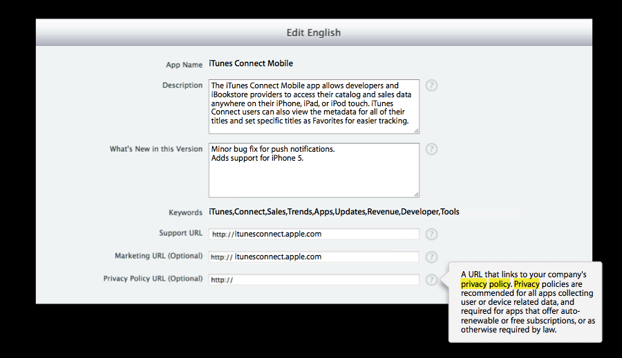
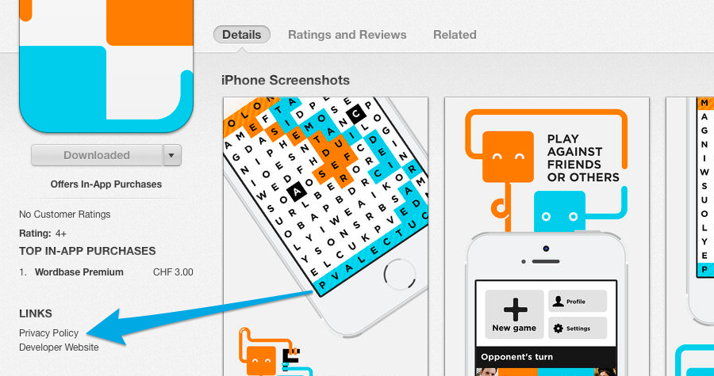

Letztes Update: 28.07.2014
Diese Seite beantwortet die Frage wie und warum man eine Datenschutzerklärung zu einer iOS App hinzufügen sollte und wie diese zum App Store hinzugefügt werden kann.
Eine Übersicht zu den juristischen Details finden sich auf der Hauptseite.
1) Verpflichtet mich der Apple App Store zu einer Datenschutzerklärung?
Es gibt keine Blankoverpflichtung von der Seite von Apple. Dafür gibt es klare Ansagen bezüglich folgender Kategorien:
- falls die App Kinder under 13 Jahren bedient (ab iOS 7);
- Apps welche auf HealthKit verlinken (ab iOS 8);
- Apps welche auf HomeKit verlinken (ab iOS 8);
- Apps die Drittanbieter Tastaturen sind (ab iOS 8);
Für iOS 8 hat Apple einiges an Arbeit für Datenschutz für Nutzer getan und deshalb gibt es hier einen kleinen Einblick in eine Präsentation mit dem Namen User Privacy on iOS 8 and OS X:
From User Privacy on iOS 8 and OS X
Important for all apps to have one, required for some app categories.
- x Apps that link against HealthKit
- x Apps that link against HomeKit
- x Third party keyboards
- x Kids
Die relevanten Apple Dokumente sagen allgemein, dass Datenschutzgesetze befolgt werden müssen. Einige Ausschnitte sollen hier weitergegeben werden (iOS Developer Program License Agreement, Apple App Store Review Requirement).
Von den "Apple App Store Review Requirement Docs"
"Apps cannot transmit data about a user without obtaining the user's prior permission and providing the user with access to information about how and where the data will be used" (Section 17.1 of the App Store Review Guidelines).
Mit anderen Worten gibt es keine Datenschutzerklärungsregel die in jedem Fall gilt, aber es gibt einen klaren Hinweis dass Apps mit Datenverarbeitung eine solche auch angeben müssen.
Von denselben Docs, II
Developers must provide clear and complete information to users regarding collection, use and disclosure of user or device data. (Section 3.3.10 of the iOS Developer Program License Agreement)
Über das Eingeben von Urls im Submission Process
Apps should have all included URLs fully functional when you submit it for review, such as support and privacy policy URLs. (Section 3.12 of the App Store Review Guidelines)
Über Apps für Kinder
Apps that collect, transmit, or have the capability to share personal information (e.g. name, address, email, location, photos, videos, drawings, persistent identifiers, the ability to chat, or other personal data) from a minor must comply with applicable children's privacy statutes
Der letzte Abschnitt über Kinder-Datenschutz ist vor allem eine Konzession an COPPA, ein Gesetz das die Daten von Kindern in den Vereinigten Staaten schützen will (dies ist eine Abkürzung für Children's Online Privacy Protection Act)
2) Wie kann ich meine DSE zum App Store hinzufügen/ändern?
Dieser Abschnitt bezeichnet den App Store Link und nicht den Link in der App. Es gibt ein Eingabeformular für Datenschutz-Urls beim Einreichen der App zum Review Prozess. Man fülle dieses Formular aus.
Beim Aufrufen der App Seite welche der Store danach generiert, also
https://itunes.apple.com/app/idxXxxXXXetc,
kann man den Link (vorerst) nicht finden. Der Grund hierfür ist allerdings, dass Apple entschieden hat den Link da noch nicht zu zeigen, stattdessen erst beim Öffnen im iTunes Fenster:
Nun sind wir schon bereit. Bei Bedarf kann der längere, originale Artikel auf dem iubenda Blog gelesen werden (EN).
Das Ziel dieser Anleitung ist Entwickler in mehreren Sprachen über Ressourcen und Best-Practices zu informieren.
Pull requests sind wilkommen.
Mehr darüber lesen wo sonst eine Datenschutzerklärung hingehört.